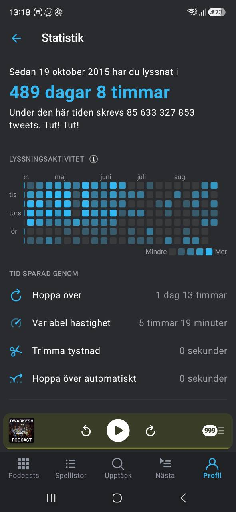

11,744 hours
489 days and 8 hours since 2015-10-19, equal to about 1.34 years of listening time.
Supporting profile signal
Marcus has a documented podcast-based information-intake habit, averaging roughly three hours of listening per day over the measured period. The followed feeds span AI, technology, startups, business, science, decision-making, institutions, and policy.
Evidence boundary
This is supporting profile context. Listening time and followed-feed topics can show sustained curiosity and source taste, but they do not prove expertise, learning outcomes, or that every followed show is listened to regularly.
Category-level listening time is not available, so the figures must not be presented as AI or business listening time.
Verified aggregate signal
Statistics are based on the Pocket Casts screenshot supplied on 2026-08-28. Derived figures use the period from 2015-10-19 to 2026-08-28.
489 days and 8 hours since 2015-10-19, equal to about 1.34 years of listening time.
About 20.7 hours per week, or 2.96 hours per day across the measured period.
Rounded, that is 294 full-time work weeks, or about 5.6 full-time work years at 40 hours per week.
Pocket Casts reports 1 day 13 hours saved by skipping and 5 hours 19 minutes by variable speed.
The playful statistic
Pocket Casts uses this as a playful comparison for how many tweets were written during the listening period. “Tut! Tut!” It is app-generated context, not a measure of Marcus's activity.

Recruiter-relevant podcast clusters
The list below shows representative followed feeds from the export. Podcast show names and listening-history detail are allowed as deliberate public evidence, but this remains a source-taste map, not a category-level listening report.
How to use this evidence
The stronger professional claim is not “podcasts prove competence”. It is that product, AI, business, science, and policy inputs form part of the information environment behind the project work documented elsewhere.